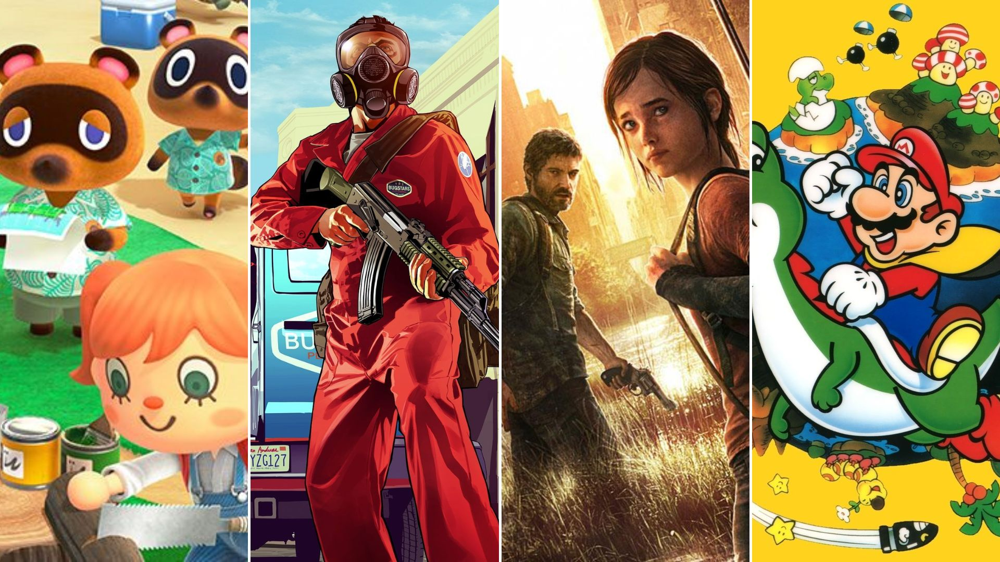

mundo dos jogos é vasto e diverso, com opções pra todos os gostos — desde quem curte resolver puzzles até quem quer sair por aí derrotando chefões épicos. Eles também evoluíram muito: de fliperamas pixelados até mundos hiperrealistas em realidade virtual.
Ação/Aventura: foco em combate, exploração e história. Exemplos: The Legend of Zelda, God of War.
RPG (Role-Playing Game): você assume o papel de um personagem e evolui suas habilidades. Ex: Final Fantasy, The Witcher 3, Elden Ring.
FPS (First-Person Shooter): jogos de tiro em primeira pessoa. Ex: Call of Duty, Valorant, Counter-Strike.
MMORPG: RPGs massivos online. Ex: World of Warcraft, Final Fantasy XIV.
Simulação: simulam a vida ou atividades reais. Ex: The Sims, Stardew Valley, Flight Simulator.
Esportes e corrida: FIFA, NBA 2K, Mario Kart, Gran Turismo.
Indies: jogos feitos por desenvolvedores independentes. Muitos têm ideias super criativas! Ex: Hollow Knight, Celeste, Undertale..
Você pode jogar em:
Consoles: PlayStation, Xbox, Nintendo Switch.
PC: onde dá pra customizar muito.
Mobile: jogos de celular como Genshin Impact, Clash Royale, Free Fire.
VR: realidade virtual, pra uma imersão total. Ex: Beat Saber, Half-Life: Alyx.
Jogos hoje são mais do que só diversão — são sociais, competitivos e até esportivos. O eSports cresceu muito, com torneios gigantes e premiações milionárias.
Se quiser, posso te recomendar alguns jogos com base no que você curte. Você prefere ação, narrativa, construir coisas, jogar online…?
